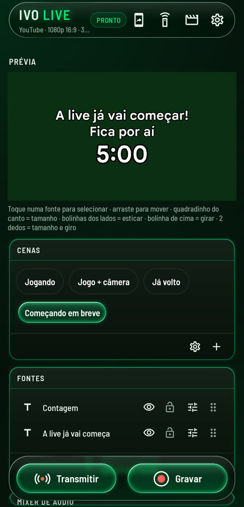
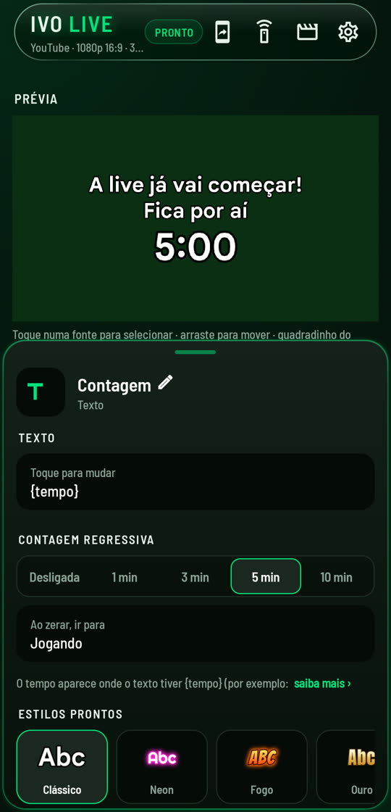

Guias › Um relógio na tela de espera que troca para o jogo sozinho.
Como pôr uma contagem "Começa em 5:00"
Quem chega antes da live começar fica olhando para uma tela parada e pode ir embora. Uma contagem regressiva mostra quanto falta, e quando ela zera o IVO LIVE troca sozinho para a cena do jogo.
Você vai precisar de
- O IVO LIVE na versão 0.61 ou mais nova.
1Crie a cena Começando em breve
No quadro Cenas, toque no + e escolha Começando em breve. A cena já vem com a frase "A live já vai começar" e um relógio de 5 minutos, programado para ir para a cena que tem o jogo quando zerar.

2Ajuste o tempo e a cena seguinte
No quadro Fontes, abra os ajustes da fonte Contagem (o botão das barrinhas). Ali você escolhe 1, 3, 5 ou 10 minutos e, em Ao zerar, ir para, a cena que entra quando o tempo acabar. Se preferir que a cena não troque, escolha Ficar nesta cena.

3Escreva a sua frase
Toque no texto para mudar. O tempo aparece onde estiver escrito {tempo}. Por exemplo, "Começa em {tempo}" vira "Começa em 4:59", depois "Começa em 4:58", e assim até zerar. Logo abaixo ficam os estilos prontos de letra, como Neon, Fogo e Ouro.
4Comece a live nessa cena
Deixe a cena Começando em breve selecionada e toque em Transmitir. A contagem começa assim que a live entra no ar. Fora da gravação ou da live, o relógio fica parado mostrando o tempo cheio, então você pode arrumar a cena com calma.
A contagem recomeça do zero cada vez que a cena entra. Se você voltar para Começando em breve no meio da live, o relógio conta de novo.